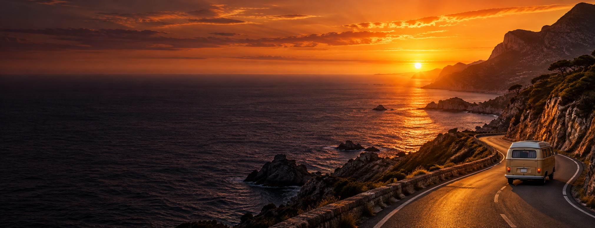

PARA QUEM COLECIONA MOMENTOS
Sua próxima
história
começa aqui.
Viajar vai além dos lugares. É sobre encontros,
descobertas e memórias que ficam.
Vamos escrever a sua próxima história?
Novos lugaresUM MUNDO PARA SENTIR
Boas históriasMEMÓRIAS PARA GUARDAR
Seu próprio ritmoVIAGENS COM A SUA ESSÊNCIA
CADA LUGAR, UM NOVO CAPÍTULO
A jornada
nunca termina.
Dos caminhos menos conhecidos aos lugares que você sempre sonhou conhecer. Há uma história esperando por você em cada canto do mundo.
Explore os destinos Clique nas fotos e embarque ↗INSPIRAÇÃO PARA O SEU PRÓXIMO CAPÍTULO
Diários de viagem
Pequenos momentos. Grandes descobertas.
Histórias editoriais para inspirar a sua viagem.

MAIS PRESENÇA. MAIS DESCOBERTAS.
Planeje a sua história.
A Wanderly nasceu da vontade de viajar com mais significado. Encontre inspiração e organize seus próximos passos — para viver a aventura no seu próprio ritmo.
com significado
e cultura local
pelo destino
para explorar
não coisas.
As melhores histórias começam com um primeiro passo.